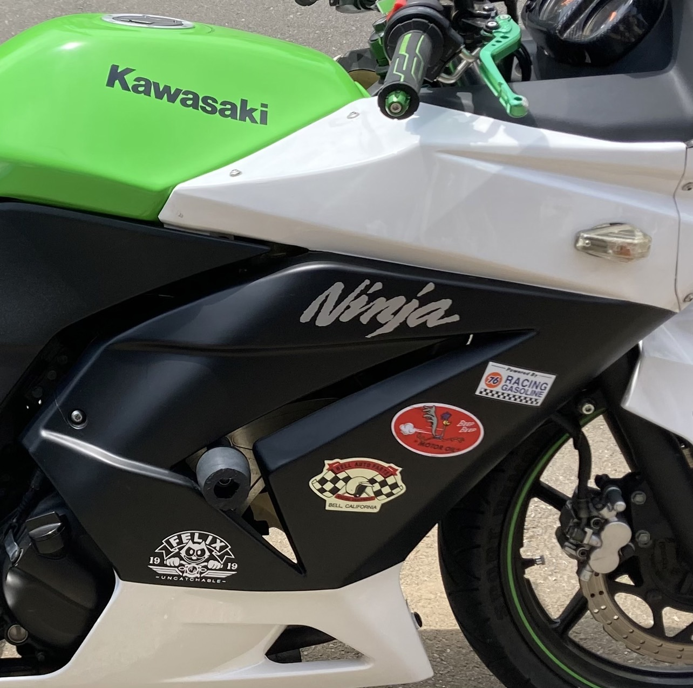

Ninja250R：カスタム紹介
社外セパレートハンドル
社外レバー
エンジンガード
社外サイドカウル＆塗装・ステッカー
バックステップ
スリップオンマフラー
リアフェンダーレスキット
ハンドル周り
前オーナーのカスタム。ハンドルがハの字に下がり前傾姿勢になるので見た目は良いが、手に体重が乗るので長時間乗っていると痛くなる。
毎日片道一時間バイクに乗って通学しているのでまあまあしんどい。
手に負担をかける事に興奮を覚える人にお勧め。
こちらも納車時から変更なし。色合いは良いが両方とも端っこが削れている。どれだけ傾ければレバーが削れるのだろう。
エンジン周り

真ん中の隙間から顔を出している丸いやつ。倒したときにエンジンに衝撃がかかるのを防ぐ。
右側のエンジンガードがかなり削れているので何回も倒したのだろう。不安である。
白いカウルは社外の物らしい。本当に真っ白で黄緑のタンクが浮いており、ねじ周りが割れているため黒のラインを塗装した。好みのデザインに塗れたのでお気に入りのポイント。
リア周り
ステップが純正より後ろ側になっている。前に乗っていたビラーゴはフロントステップだったので慣れるまでステップを探すことになると思いきや、意外とすぐに順応できた。
中古で購入した月木製のスリップオンマフラー。紹介した中で唯一自分で買い替えた箇所。純正のマフラーは音が小さく「ポポポポ」といった優しい音を鳴らしていたが、このマフラーは重低音が強化され、「ボボボボ」と力強い音を鳴らしてくれる。
少し高価だったが、良い音でうるさすぎずパワーも増した（気がする）ので気に入っている。
タイヤの上にフェンダー（雨除け）がない。スポーティな見た目になるが雨の日は背中や後続車に雨や泥を飛ばしてしまうらしく、雨の日にバイクに乗るときは後続車に心の中で謝罪しながら乗っている。
全体像

Thanks for watching!